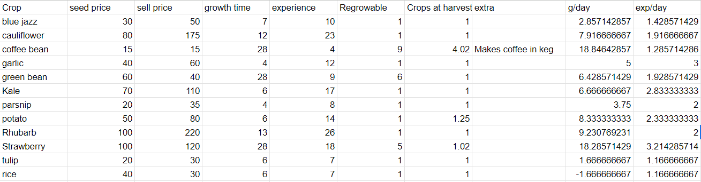

Spring is the least profitable season, but it's also the first season, that means it's important to get a head start on your farm. Things like which crops you can afford, or which ones will finish before the season does are all very important to consider as you plan ahead for the first season, or perhaps you're in your second year, looking to maximise profit. (The answer is strawberries folks.) Here's the information for all the spring crops, with a summary below:
Quick summary: Strawberries are by far the best in all categories, unless you want to make wine, for which rhubarb has a slightly higher sell price. Obviously, both of those are hard to get your hands on year 1, so you might want to start with potatoes for money and kale for xp. If you've only got a few days left in the season, or maybe you want to keep the hoed spots tilled, you can use parsnips, as they are cheap and quick to grow!